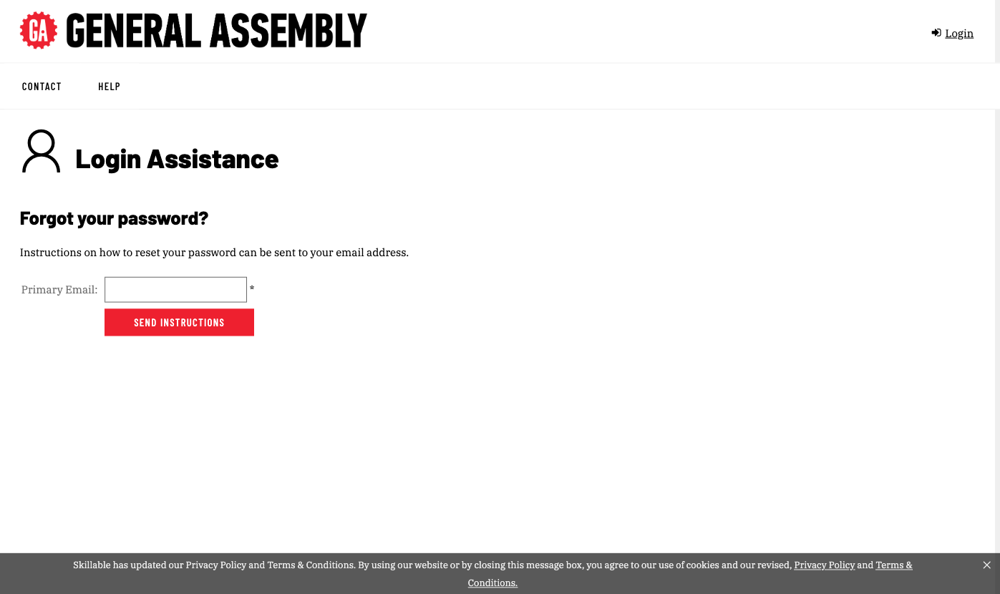
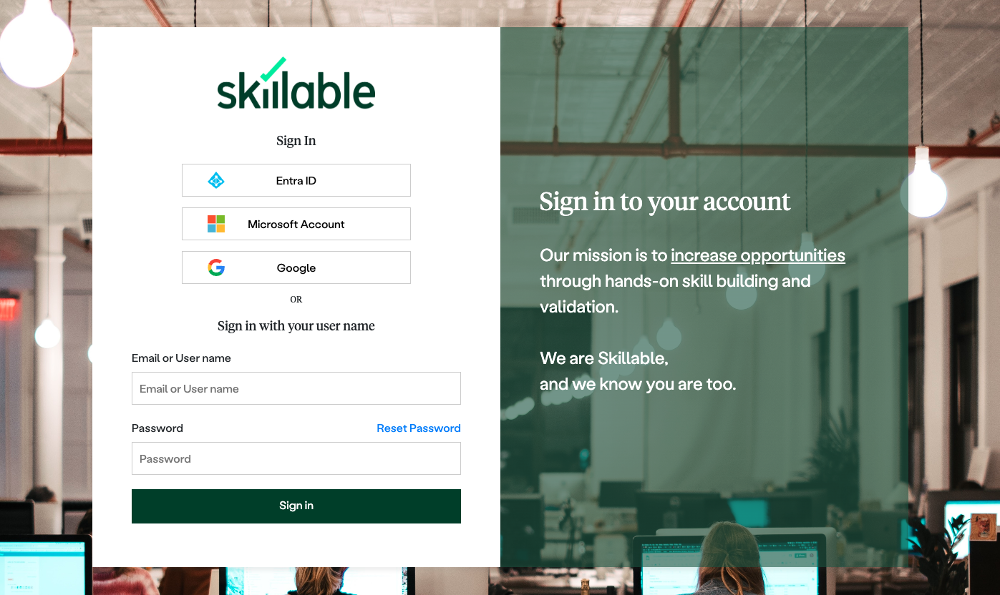

Skillable TMS is the website where classes, rosters and labs live. Everyone on the delivery team uses it. Studio, where labs are built, is by arrangement: see Build in Studio.
Before you start
- Have the sign-in details GA sent you: your email address as the username, plus a temporary password.
- Use a modern browser and allow pop-ups for the TMS site. Labs open in a new window.
- On a corporate laptop or VPN, run Skillable’s connection test at first.
Sign in
- Open the sign-in page. Go to and select Sign In.
- Enter your email and temporary password.
- Set a new password when TMS asks. You’ll be signed out straight away. That’s expected. Sign back in with the new password.
- You land on your dashboard. What you see depends on your role (below).

assets/screens/tms-sign-in.png
assets/screens/tms-change-password.pngPassword rules: at least 8 characters, with at least one number, one letter, one lower-case letter and one special character.
If you forget your password
Go to (or select Sign In, then Reset Password), enter the email on your account, and follow the link Skillable emails you. If you can’t remember which email is on your account, reach out to the lab admin.

assets/screens/tms-login-assistance.pngWhat you should see
| Your role | What you’ll see after signing in | Where to go next |
|---|---|---|
| Instructor or TA | My Calendar and My Classes in the top navigation | Find your class |
| CSM | An Admin menu with Users, Enrollments, Classes and Labs | Enroll and manage learners |
| LED, SME or contractor testing labs | The class Lab admin set up for testing, with its labs | Test a lab |
If something in this table is missing for you, reach out to the lab admin at to check your role.
Don’t create a second account. Each email address can only be used for one TMS account. If sign-in doesn’t work, reach out to the lab admin instead.
Step by step in Skillable’s docs: Resetting a password